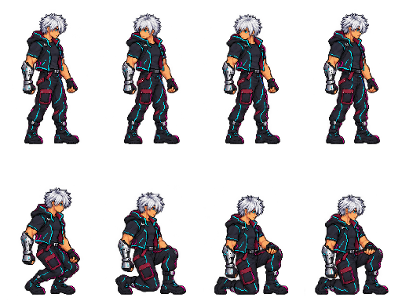

Animación de reposo · borrador 01
Mira a ambos lados, baja una rodilla y permanece arrodillado hasta moverse.
Preparando imágenes…
La última postura se mantiene sin repetir la animación. «Simular movimiento» devuelve la postura de pie; la transición para levantarse se trabajará después. Esta vista no modifica el juego.
Ver los 8 fotogramas
